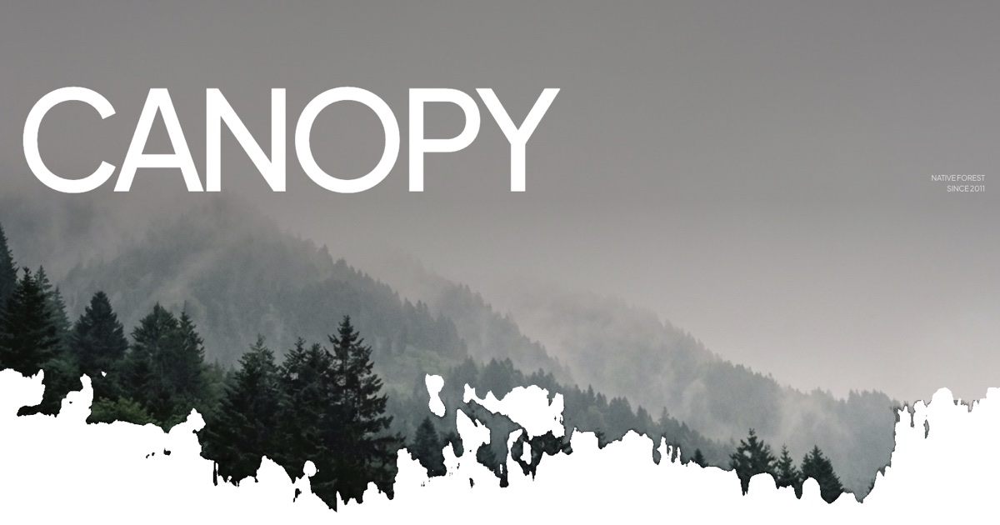

Direction-Aware Hover
The hover effect reads which edge the cursor enters, then sends the image that way.
Codrops · Worlds · 27 works · complete source in this repository
Twenty-seven grids, galleries, menus and cards: the layouts that make a flat page feel like a room.
二十七个网格、画廊、菜单与卡片。让平面页面变成一个房间的布局方法。
 Preview from the source repository
Preview from the source repository
The hover effect reads which edge the cursor enters, then sends the image that way.
A Swift content-navigation plugin; panels rotate away like cards caught in a gust.
A card-deck slider that spreads items across the table, then stacks them back.
Click a thumbnail and the grid opens a preview in place, without leaving the page.
A grid that reflows around a selected item, animating every neighbour out of the way.
Modals that arrive by scale, slide, blur and fold rather than a plain fade.
Drag a stack of cards past its threshold and it snaps to the next one with elastic weight.
A menu that pushes the page back in 3D space, then slides a panel over it.
A 'look inside' book: pages turn with a soft shadow, revealing the spread beneath.
Polaroids fall into a loose pile, then snap into a neat strip when you click.
A mosaic grid with labels and a full-screen viewer; the original Google-style gallery.
A full-screen menu decomposes into a grid of thumbnails, then reassembles.
 050
SVG filter
Open demo ↗
050
SVG filter
Open demo ↗
An SVG turbulence filter distorts the image as it passes through the viewport.
A 3D grid accelerates toward the viewer as you scroll, lines converging to a vanishing point.
 052
Slideshow
Open demo ↗
052
Slideshow
Open demo ↗
Full-screen images change through wipes, scales and layered reveals.
Images leave trails of themselves as they move, like long-exposure photography.
 054
3D grid
Open demo ↗
054
3D grid
Open demo ↗
A grid of planes tilts and cascades in 3D, with each row delayed.
 055
Elastic grid
Open demo ↗
055
Elastic grid
Open demo ↗
The grid stretches against the scroll and springs back when you stop.
A button that inflates into a glossy 3D balloon under the cursor.
Images rotate through 3D space as they enter and leave the viewport.
058
Cinema
Open demo ↗
Pick a seat in a 3D cinema and see the screen from that angle.

059 Seam Open demo ↗Pages join along a seam that opens, folds and closes into the next view.
 060
Lookbook
Open demo ↗
060
Lookbook
Open demo ↗
Fashion lookbook hovers: images slide, crop and reveal alternate angles.
 061
Inline reveal
Open demo ↗
061
Inline reveal
Open demo ↗
Inline images bloom out of body text as the cursor passes over links.